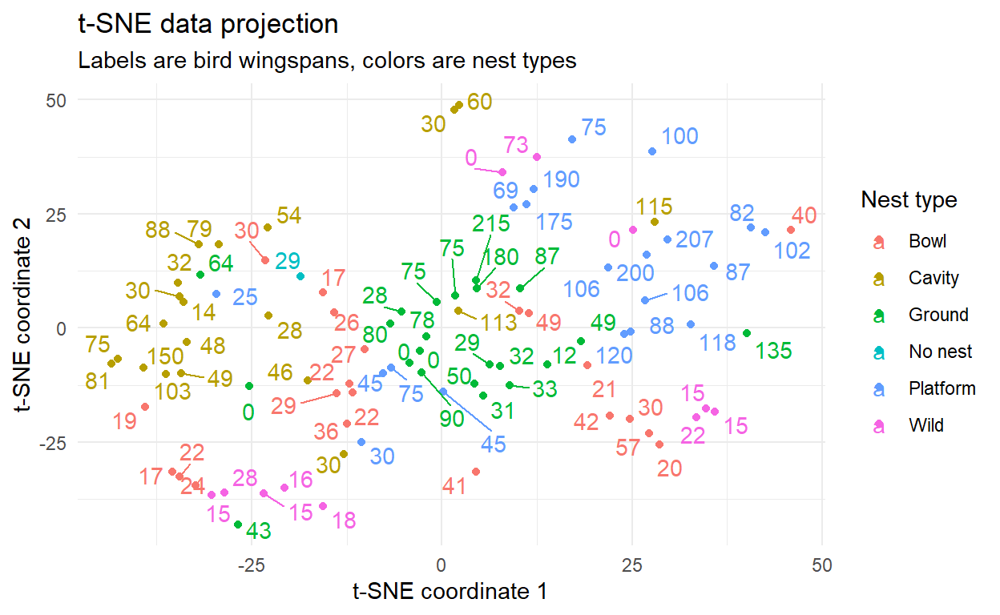
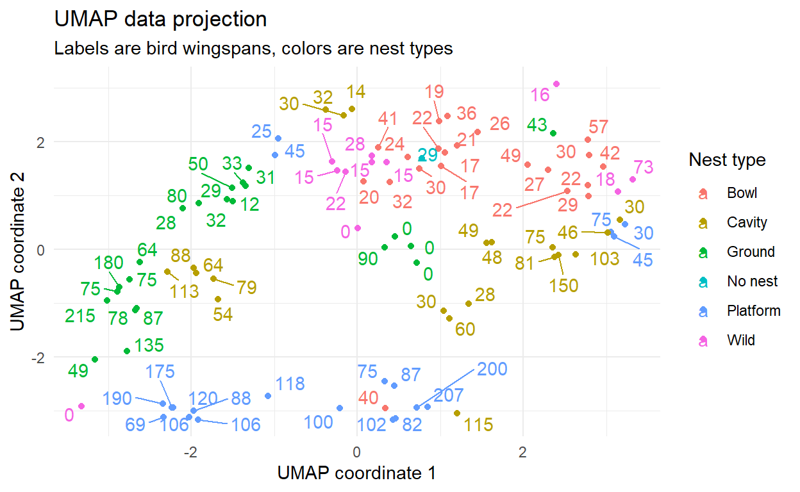

Wingspan is a wonderful game. It has an accessible theme, beautiful components and is a great example of the board game hobby. Whats great is that Wingspan also showcases over 300 unique birds - all of which can be accessed with the wingspan package!
The birds dataset
The birds dataset in the wingspan package contains 50 variables, some of them reflect the actual characteristics of the birds - such as the wingspan, type of nest - other properties are related to the game mechanics (type of habitat, egg capacity, type of food eaten). In cases where we have a lot of variables that we would like to compress down to 2-3 dimensions for visualisation or prediction model purposes, dimension reduction techniques are used.
This blog post is going to show how to apply different dimension reduction techniques and visualise the end result in an interactive chart of the birds similar to Joshua Kunsts Pokemon cloud.
Prepping data for dimensionality reduction
For all of these techniques, its best to turn the data into a matrix. Another good thing is to drop variables that do not carry information about the birds themselves, such as the name.
bird_matrix <- birds %>%
select(-c("common_name","scientific_name","power_text","set","food_cost_mul")) %>%
mutate(across(everything(), ~replace_na(., "Other"))) %>%
model.matrix(~., data = .) %>%
as.data.frame() %>%
as_tibble() %>%
select(-1)
Principal Component Analysis (PCA)
Principal component analysis (PCA) is a linear dimension reduction technique. Without delving into specifics, a principal component (PC) is a collection of points in a coordinate space so that the first PC captures the most variance while the second capture variance orthogonal to the first one. There are methods to check whether the first few components captured the majority of the variance but Ill leave that for another blog post. PCA is best used for continuous data. If you have transcriptomics, spectrophotometry data, PCA is going to return pretty good results. If you have a dataset with continuous and categorical data, Multiple Factor Analysis may be more appropriate.
pca_rs <- prcomp(bird_matrix, scale = TRUE, center = TRUE)
birds <- pca_rs %>%
broom::augment(birds) %>%
select(colnames(birds),.fittedPC1,.fittedPC2)
ggplot(birds, aes(x = .fittedPC1,
y = .fittedPC2,
color = nest_type)) +
geom_point() +
theme_minimal() +
ggrepel::geom_text_repel(aes(label = wingspan)) +
labs(title = "PCA data projection",
subtitle = "Labels are bird wingspans, colors are nest types",
x = "PC component 1",
y = "PC component 2",
color = "Nest type")

PCA did capture the variance in wingspan between the birds but it did not form distinct clusters. As we expected previously, PCA is not the best reduction technique for our dataset.
t-SNE
t-distributed stochastic neighbor embedding (t-SNE) was developed in 2008 to embed data points into a two or three dimensional space. t-SNE works in two ways: first, it creates a probability distribution over each pair of datapoints and assigns a probability based on how similar they are. Then, it creates a second probability distribution for the points when theyre already on the manifold. Then, the divergence between the two distribution is minimised. The process in action is visualised here. t-SNE is non-linear so a mixed dataset can be used. The only problem is that t-SNE has hyperparameters so the initial conditions may not return your desired result. For further reading on hyperparameter tuning, this Distill article is excellent.
library(tsne)
rs <- tsne(bird_matrix,
max_iter = 3000)
birds$tsne_1 <- rs[,1]
birds$tsne_2 <- rs[,2]
ggplot(birds, aes(x = tsne_1,
y = tsne_2,
color = nest_type)) +
geom_point() +
theme_minimal() +
ggrepel::geom_text_repel(aes(label = wingspan)) +
labs(title = "t-SNE data projection",
subtitle = "Labels are bird wingspans, colors are nest types",
x = "t-SNE coordinate 1",
y = "t-SNE coordinate 2",
color = "Nest type")

UMAP
Uniform manifold approximation and projection (UMAP) is a non-linear reduction technique. Developed in 2018, it is similar to t-SNE. Unlike t-SNE, UMAP allows interpreting distances between clusters and UMAP is computationally faster than t-SNE. The paper itself can be found here. Overall, like t-SNE, UMAP is best used for visualising similar or dissimilar datapoints. The method is especially useful in transcriptomics. But there is noone stopping us from applying UMAP to our dataset.
library(umap)
rs <- umap(bird_matrix)
birds$umap_1 <- rs$layout[,1]
birds$umap_2 <- rs$layout[,2]
ggplot(birds, aes(x = umap_1,
y = umap_2,
color = nest_type)) +
geom_point() +
theme_minimal() +
ggrepel::geom_text_repel(aes(label = wingspan)) +
labs(title = "UMAP data projection",
subtitle = "Labels are bird wingspans, colors are nest types",
x = "UMAP coordinate 1",
y = "UMAP coordinate 2",
color = "Nest type")

Generally, the output is similar to PCAs results - the large platform nesting birds are far from the rest of the data, ground nesting birds and cavity nesting birds are on the side while the rest of the tiny birds are intermingled in a single group. For an interactive chart, we are going to use UMAPs results.
Pulling birb images from Wikimedia
The one thing the birds dataset does not come with is images for the birds. At first, I wanted to use the original art of Wingspan. Natalia Rojas, the artist for Wingspan, has only published around half of the images. Instead, I am going to use real bird images sourced from the Wikimedia API. All of the birds have standard Wikipedia links based on their common names, so pulling in images is going to be easy. Or so I thought.
Some of the bird names have been modified for balancing (for example, the Australian white ibis is just the Australian ibis in Wingspan). Also, some of the bird names in Wingspan are not used for the article in Wikipedia. However, the dataset contains scientific names which have not been modified.
The image sourcing is divided into two steps. First, we use the latin name to check where would Wikipedia redirect us. We save the name of the article and use that to pull the header image from the article. This saves us the trouble of recoding some of the names, dealing with special character encoding and rechecking the data whenever a new Wingspan expansion is released.
get_true_name <- function(x) {
bird_common_name <- stringr::str_to_sentence(x)
#bird_common_name <- gsub("'","%27",bird_common_name)
bird_common_name <- gsub("\\s","_",bird_common_name)
rs <- GET(glue::glue("http://en.wikipedia.org/w/api.php?action=query&format=json&titles={bird_common_name}&redirects&prop=redirects&rdlimit=max"))
content(rs)$query$redirects[[1]]$to
}
get_bird_image <- function(x) {
#bird_common_name <- stringr::str_to_sentence(x)
#bird_common_name <- gsub("'","%27",bird_common_name)
bird_common_name <- gsub("\\s","_",x)
rs <- GET("http://en.wikipedia.org/w/api.php?",
query = list(action = "query",
titles = bird_common_name,
prop = "pageimages",
format = "json",
pithumbsize = 300
))
link <- content(rs)$query$pages[[1]]$thumbnail$source
return(link)
}
true_names <- map(birds$scientific_name,get_true_name)
# For troubleshooting missing names:
# true_names[sapply(true_names, is.null)] <- NA
bird_urls <- map(true_names,get_bird_image)
# For troubleshooting missing images:
# bird_urls[sapply(bird_urls, is.null)] <- NA
birds$true_common_name <- unlist(true_names)
birds$image_url <- unlist(bird_urls)
Building the interactive chart
xt <- c("common_name", "scientific_name")
yt <- str_c("{point.", xt, "}")
xt <- str_replace(xt, "_", " ")
xt <- str_to_sentence(xt)
tb <- tooltip_table(
xt,
yt,
cellspacing="0",
cellpadding="0",
style = "border:none; border-collapse: collapse;"
)
tb <- tagList(
tags$img(
src = "{point.image_url}",
width = "150px", height = "125px")
) %>%
as.character() %>%
str_c(tb, .)
highchart() %>%
hc_chart(zoomtype = "xy") %>%
hc_xAxis(
visible = FALSE,
minRange = diff(range(birds$umap_1))/5
) %>%
hc_yAxis(
visible = FALSE,
minRange = diff(range(birds$umap_2))/5
) %>%
hc_tooltip(
useHTML = TRUE,
borderRadius = 0,
borderWidth = 5,
headerFormat = "",
pointFormat = tb,
footerFormat = ""
) %>%
hc_add_series(
birds,
"point",
hcaes(umap_1,
umap_2,
name = common_name,
group = nest_type,
color = nest_type),
states = list(
hover = list(
halo = list(
size = 50,
attributes = list(opacity = 1)
)
)
)
) %>%
hc_add_series(
birds %>% select(umap_1, umap_2, nest_type) %>% mutate(z = 1),
"bubble",
minSize = 100,
showInLegend = FALSE,
hcaes(umap_1, umap_2, color = nest_type),
marker = list(fillOpacity = 0.05, lineWidth = NULL),
zIndex = -3,
#opacity = 0.1,
enableMouseTracking = FALSE
)